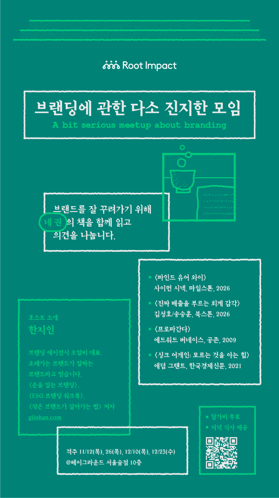

이렇게 1
- 일시
- 2026년 11월 12일 – 12월 23일
격주 목요일 저녁 7시 - 참여
- 헤이그라운드 멤버 내 신청
- 진행
- 호스트 한지인
- 세션 구조
- 멤버 체크인 → 요약 및 주요 인사이트 → 나누고 싶은 질문 → 내 이야기 공유 → 마무리
- 기타
- 12월 24일은 크리스마스 이브로, 하루 앞당겨 23일 수요일에 만납니다.
이렇게 2
인사이트 공유
참여자는 모임 직전까지 해당 회차의 기록칸에 ‘나누고 싶은 물음표’를 공유합니다. 물음표를 만들어낸 인상 깊었던 구절이나 인사이트를 함께 남겨주셔도 좋습니다. 서로의 생각을 미리 확인하고 더 풍성한 아이디어를 나누기 위함입니다.
진행 방식
호스트가 챕터별 요약 발제와 인사이트를 공유한 뒤, 참여자들의 물음표를 이어서 나눕니다. 각자의 생각을 돌아가며 공유합니다.
시간표
- 1회차 11월 12일 목요일
파인드 유어 와이사이몬 시넥 · 데이비드 미드 · 피터 도커 · 마일스톤, 2026TED의 ‘골든서클’ 영상과 『스타트 위드 와이』로 유명한 사이먼 시넥의 책을 함께 읽고, “그래서 대체 와이를 어떻게 찾는 건데?”라는 물음표의 대답을 찾아봅니다.
- 2회차 11월 26일 목요일
진짜 매출을 부르는 회계 감각김성호 · 송승훈 · 북스톤, 2026숫자로 회사를 읽고 숫자에서 통찰을 얻는 방법. 회계사와 세무사의 책을 읽고 속 시원하고 명확하게 회사의 과거, 현재, 미래를 써내려가 봅니다.
- 3회차 12월 10일 목요일
프로파간다에드워드 버네이스 · 공존, 20091928년에 쓰인 마케팅의 고전을 읽으며 대중심리학과 정신분석학을 결합해 대중의 여론과 동의를 이끌어내는 기법을 살피고, 우리의 마케팅 방향성을 점검합니다.
- 4회차 12월 23일 수요일
싱크 어게인: 모르는 것을 아는 힘애덤 그랜트 · 한국경제신문, 2021‘다시 생각하기’를 통해 진짜 유능함과 성공이 어디에서 비롯되는지 살펴봅니다. 인사이트와 사례를 통해 일과 삶을 대하는 태도에 대한 마음을 나눕니다.